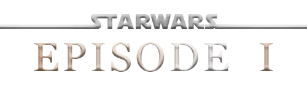

Kashyyyk , également connue sous le nom de Wookiee Planet C , Edean , G5-623 et le monde des Wookiees , était une planète de la Mid Rim .
C'était le monde luxuriant et arboré des Wookiee .
Il était membre de la République Galactique , a subi l'esclavage sous le règne de l'Empire Galactique , et plus tard a rejoint la Nouvelle République .